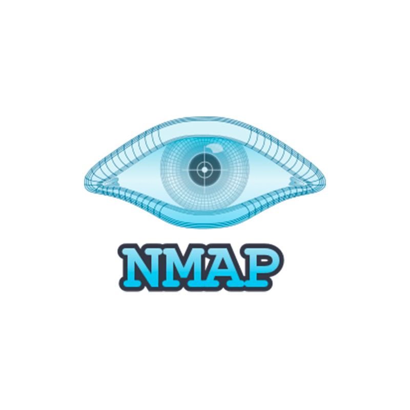
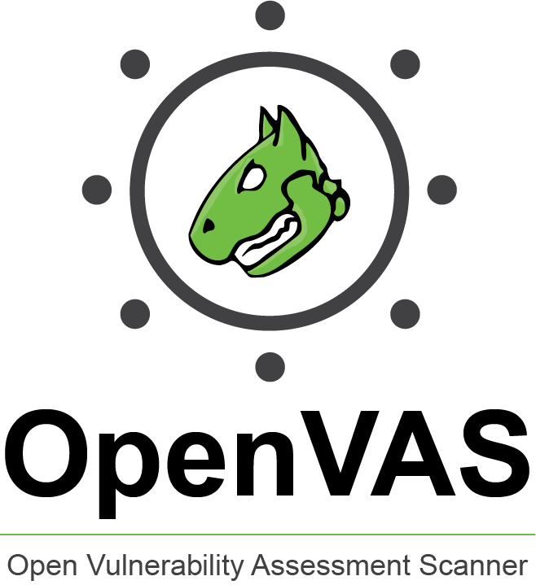

Ferramentas Essenciais
| Ferramenta | Funcionalidade | Logotipo |
|---|---|---|
| Nmap | É utilizada para realizar varreduras de redes e hosts: descoberta de portas TCP/UDP, detecção de serviços e versões, identificação de sistemas operacionais, execução de scripts NSE para auditoria, mapeamento de topologia, varreduras furtivas, controle de tempo e geração de relatórios. |  |
| Wireshark | A sua funcionalidade encolve a captura e análise de tráfego de rede: inspeção de pacotes em tempo real, filtragem e reassembly, decodificação de protocolos, análise de desempenho, detecção de anomalias, exportação de logs, visualização gráfica e suporte a formatos de captura. | |
| Metasploit | É uma ferramenta usada para exploração e desenvolvimento de exploits: gerenciamento de payloads, execução de ataques pós-exploração, criação e personalização de módulos, automação de testes de penetração, integração com scanners, exploração remota, geração de relatórios e console interativa avançada para controle. | |
| John the Ripper | Serve para quebra de senhas e análise de hashes: ataque por dicionário e força bruta, suporte a formatos diversos de hash, regras de transformação, otimização por GPU/CPU, ataque distribuído, recuperação avançada de senhas, relatórios de sucesso e falha. | |
| Burp Suite | Voltada para testes de segurança de aplicações web: interceptação e modificação de requisições HTTP(S), análise de parâmetros, scanner de vulnerabilidades, repetição e fuzzing, suporte a extensões, automação de testes avançada, geração de relatórios e proxy para workflow manual. | |
| OpenVAS | Realiza varredura de vulnerabilidades em redes e sistemas: avaliação baseada em plugins, identificação de configurações inseguras, verificação de patch, priorização de riscos, integração com base CVE, agendamento de scans, análise de resultados e geração de relatórios detalhados. |  |
| Medusa | Ferramenta que auxilia na execução de ataques de força bruta em serviços de rede: suporte a protocolos (ssh, ftp, http, smb), execução paralela de credenciais, integração com listas de senhas, controle de threads, reintentos configuráveis, registro de tentativas, para relatórios e automação. | |
| Gobuster | Também destibada para ataques de força bruta: URIs (diretórios e arquivos) em sites, subdomínios DNS (com suporte a curingas), nomes de hosts virtuais em servidores web de destino, buckets abertos do Amazon S3, buckets abertos do Google Cloud e servidores TFTP. | |
| Hash64 | Funções que, no contexto da cibersegurança, servem para o armazenamento de senhas de forma segura utilizando algoritmos de hash. |
Recursos Adicionais
Para mais informações sobre essas ferramentas, visite os sites oficiais ou consulte tutoriais online.